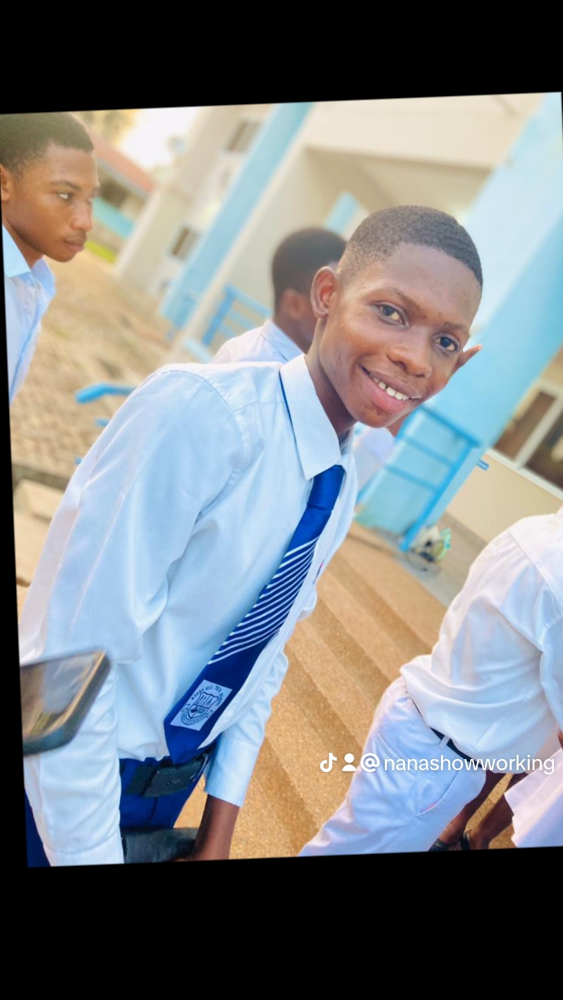

MY BIOGRAPHY

ABOUT THE EDITOR
"As a recent graduate of Koase STEM Senior High Technical School, I, Adu-Twum Solomon (born March 28, 2007), have developed a strong passion for website development and design. Raised by my dedicated mother, Bruwaa Twumasi, and family, I gained hands-on experience with various programming languages, including HTML, CSS, JavaScript, and PHP. I explored popular frameworks and tools like Bootstrap, WordPress, and Adobe Creative Suite.With a keen eye for detail and drive to stay updated with industry trends, I'm committed to delivering high-quality, responsive, and visually appealing websites. My goal is to leverage my skills to help individuals, businesses, and organizations establish a strong online presence.